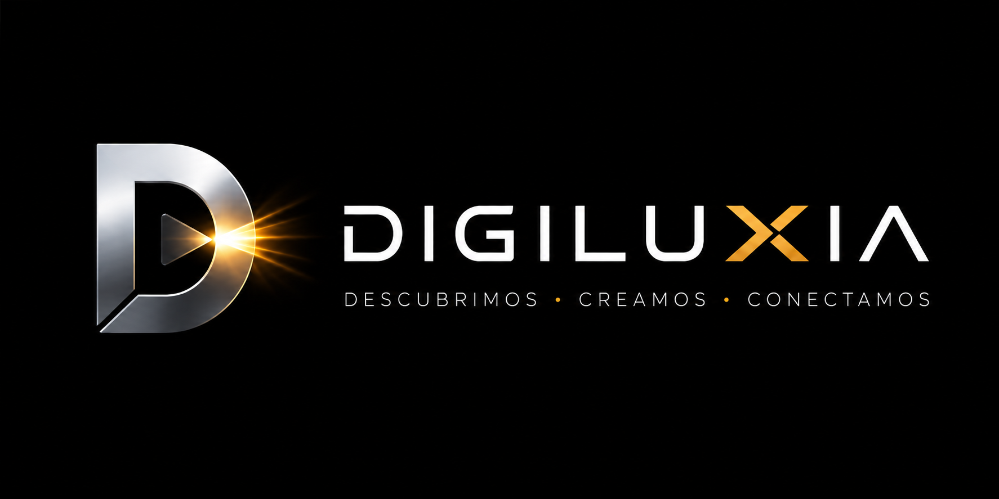
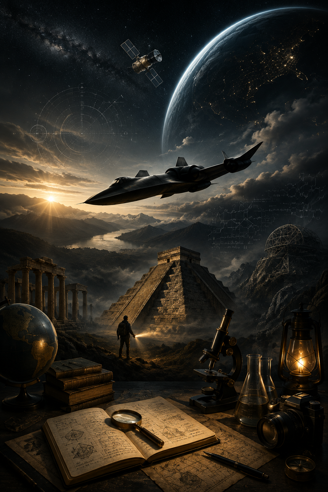
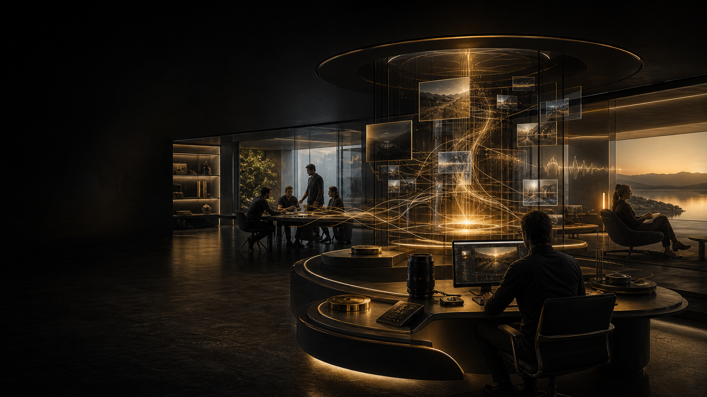

EXPLORE
01 · CONOCIMIENTO & CURIOSIDADExplore
Aviación, tecnología, espacio, misterios, fenómenos inexplicados, mitos, leyendas y mundos perdidos.
Explorar contenido →
ECOSISTEMA DIGITAL CORPORATIVO
Historias, experiencias y recursos digitales creados para despertar curiosidad, aportar valor y conectar mundos.

DIGILUXIA EXPLOREUN HUB · MÚLTIPLES EXPERIENCIAS
DIGILUXIA conecta contenido, audiencias, productos y nuevas oportunidades bajo una arquitectura común. Cada vertical puede evolucionar sin fragmentar la marca.
Aviación, tecnología, espacio, misterios, fenómenos inexplicados, mitos, leyendas y mundos perdidos.
Explorar contenido →Música, paisajes sonoros y experiencias inmersivas para descanso, sueño, enfoque, naturaleza y meditación.
En desarrollo →Selección de guías, cursos, recursos digitales, herramientas y productos útiles conectados con nuestro ecosistema.
Próximamente →
DIGILUXIA EXPLORE · EN PRODUCCIÓN
Una producción documental sobre la ingeniería, las decisiones y el contexto histórico que hicieron del SR‑71 Blackbird una aeronave extraordinaria — y por qué décadas después sigue sin tener un reemplazo exacto.
Seguir el proyecto →MEDIOS & COMUNIDAD
Producciones largas con investigación, narrativa visual y rigor editorial.
Ideas, hechos y momentos diseñados para descubrir y compartir.
Contenido web que amplía, documenta y conecta cada producción.
Expansión hacia pódcast, experiencias sonoras y transmisiones cuando corresponda.
ARQUITECTURA ESCALABLE
Un contenido maestro puede transformarse en múltiples formatos.
La web funciona como centro de marca, descubrimiento y conexión.
Las nuevas verticales se activan solo cuando aportan valor real y son sostenibles.
NUESTRO ESTÁNDAR
DIGILUXIA explora lo extraordinario sin renunciar a la precisión. Diferenciamos evidencia, testimonios, hipótesis, tradición y especulación. La confianza también forma parte de la experiencia.
DESCUBRIR · CREAR · CONECTAR
Contenido, experiencias y proyectos construidos para crecer con propósito.